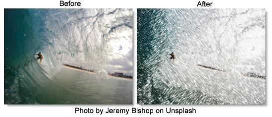

S_Crosshatch
Description
Simulates a pen-sketch crosshatched look using overlapping strokes. The source is divided into four bands based on luma; each band from dark to light gets a different pattern of strokes.
The S_Crosshatch filter comes from the Emmy award winning Boris FX Sapphire filter set.
Category
Stylize.
Controls
Presets
To select a preset, pick one from the Presets window.
Mode
Selects pencil or chalk modes.
CrosshatchPencil
Simulates dark pencil or pen strokes on white paper.
CrosshatchChalk
Simulates white chalk strokes on dark paper.
Stroke Style
Stroke Frequency
Increase for smaller, finer strokes; decrease for broader strokes.
Stroke Length
Average length of the strokes, compared to their width.
Stroke Strength
Overall size and strength; decrease for fewer, smaller strokes. At 0, strokes will vanish. Increase for bolder, more overlapping strokes. At 1, there will be strokes everywhere, so you won't see the stroke pattern.
Stroke Softness
Softness of the edges of each stroke. Decrease for hard edged pen strokes; increase for a softer chalk like look.
Stroke Angle
Angle of the strokes in degrees; zero makes strokes horizontal and vertical.
Threshold Darks
The darkest areas get double overlapping strokes (or pure black in chalk mode). Source areas with luma darker than this threshold are considered in the darkest band and get those double strokes. Increasing this, or any threshold, will darken the overall result since more of the image will fall into the darkest band.
Threshold Mids
Midtones are divided into darker−mids and brighter−mids. This threshold sets the luma value that separates those two bands. The darker mids get darker and denser strokes.
Threshold Brights
The brightest areas get the lightest strokes--normally just white, unless you are in chalk mode. Areas brighter than this threshold are considered brights.
Thresholds Add
Adds or subtracts from all the thresholds. Increase to darken the overall result or decrease to lighten the overall result.
Mix Threshold
Softens the borders between the dark/mid/light luma bands.
Stroke Colors
Strokes Use Source
Increase to use more of the source color to color the strokes. 0 means use the stroke color, while 1 means use the color of the underlying image. In between strokes, the background color shows through. If you have Back Style set to Source, the strokes will disappear when set to 1.
Stroke Color
The color to use for the strokes. In Pencil mode, this defaults to black. In Chalk mode, it defaults to white.
Posterize Amount
Posterizes the source, giving a more cartoony look with areas of solid color. This only has an effect when using the source to colorize the strokes or when using the source as the background.
Posterize Smooth
When posterizing, smooth the edges of the solid−color areas. This avoids aliasing and usually looks better.
Posterize Phase
Adjusts the phase of the posterization. Use this to position the areas of flat color and avoid edges in the middle of areas you'd like to keep flat.
Edges
Edge Strength
Adds cartoon like edges to the look.
Edge Width
Adjusts the width of the edge strokes. Increasing this value also softens the edges.
Edge Threshold
Increase to remove minor, insignificant edge strokes, giving a bolder look.
Edge Color
Sets the color for the edge strokes.
Suppress Small Edges
Increase to suppress small, minor edges.
Edge Sharpen
Sharpens the edge strokes.
Background Color
Back Style
What to use as the background, underneath the pen strokes.
Source
Use the source as the background. This gives a much more colorful look, as if the strokes are drawn over the original clip. You may want to adjust Stroke Color when using this.
Solid Color
Use the specified Solid Color background.
Solid Color
The color to use for the background when in Solid Color mode.
Pre Blur Bg
Blur the source before using it as background or to color the strokes. This can help reduce sparkling due to a noisy or grainy source.
Use Source Alpha
At 1, the effect appears only in the white areas of the alpha channel. At 0, the effect appears everywhere in the frame.
Color Correct
Saturation
Increase or decrease the overall saturation of the output.
Scale Lights
Scales the brightness of the result by this amount.
Offset Darks
Add a gray value to the darker regions of the source. This can be negative to increase contrast.
Tint Lights
Scales the result by this color, thus tinting the lighter regions.
Tint Darks
Adds this color to the darker regions of the result.
Mix With Source
Interpolates between the result (when set to 0) and the original source (when set to 1). 0.7 can give a nice effect by blending some of the source in with the strokes.
Seed
Initialize the random number generator for the strokes. Different values produce different random stroke patterns.